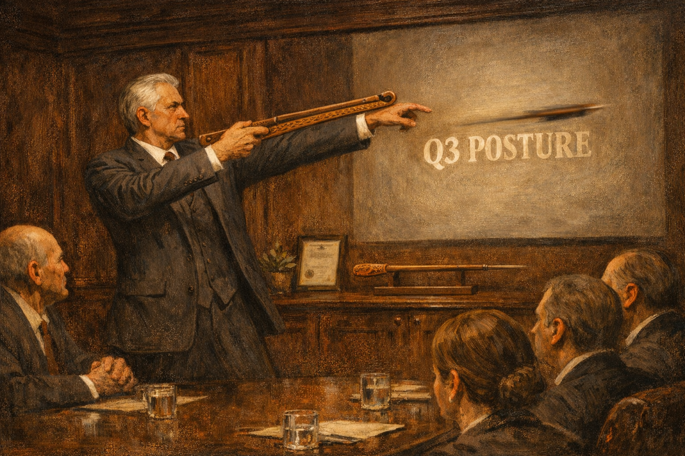

The ATLATL
Framework™
Six pillars of precision leadership for organizations ready to throw further than their arm alone would allow
Pronounced AT-lat-uhl · Third Edition, Revised & Enlarged
"I have attended seventeen leadership frameworks in fourteen years. ATLATL is the first one where I recognized myself in every single pillar and felt, briefly, proud of that."
— Vice President, Something Transformational · Name withheld at their attorney's request

A senior leader demonstrates precision trajectory at the Harrowgate Institute Annual Excellence Summit, Scottsdale, 2022. Dart not included in standard certification.
The word atlatl comes from the language of the Aztec civilization, where it referred to a spear-throwing device — a lever that extended the reach of the human arm, propelling a dart farther and faster than muscle alone could achieve. Spanish conquistadors arriving in steel plate armor reportedly feared it above all other weapons.
The ATLATL Framework is not a replacement for your leadership. It is the lever behind it — the mechanism that extends your reach, increases your velocity, and ensures your decisions land with force at distances your arm alone could never achieve. Also, it fit the acronym.
For sixteen years, the Harrowgate Institute has studied the gap between what organizations say they value in a leader and what they actually promote. That gap, it turns out, is where executives live. The ATLATL Framework does not attempt to close this gap. It furnishes it.
What other frameworks call "problems," ATLATL calls "unleveraged trajectory opportunities." What exit surveys call "reasons people left," we call "voluntary arc corrections." The framework does not change what is happening in your organization. It changes what you call it, which our research shows is almost as good.
The Six Pillars of ATLATL
Validated across 340 engagements · Peer review pending · Scottsdale-tested
The most effective leaders communicate at an altitude where direction cannot be questioned, benchmarked, or proven wrong before the next reorg makes it irrelevant.
- Goals expressed as feelings, not figures
- Strategy deck ends on a sunrise photo
- Q3 targets described as "a posture"
Elite leaders point the dart and release — execution belongs to the team, recognition belongs to whoever pointed.
- Assigns ownership, attends the launch
- Takes the podium, shares the blame
- Describes their role as "setting conditions"
Every unmet decision is simply a meeting that hasn't happened yet — and every failed decision is a meeting that should have happened twice.
- Pre-meeting to scope the meeting
- 16 stakeholders, 1 decision-maker
- Deck sent Friday, discussed Monday, actioned never
Holding a person responsible for an outcome creates discomfort, and discomfort impedes the psychological safety required to miss the next deadline in a healthy way.
- Performance managed via vibes
- Targets adjusted to meet actuals
- Written warning arrives as a LinkedIn farewell
The most adaptive organizations never allow institutional memory to accumulate to the point where employees might notice this initiative contradicts the last one.
- New framework every fiscal year
- Reorg announced before last one named
- Redundancies framed as "momentum events"
Outcomes themselves are rarely the issue — it is the language around outcomes that determines whether stakeholders feel energized or begin updating their résumés.
- "Failure" becomes "a learning trajectory"
- "Fired" becomes "alumni status conferred"
- "No strategy" becomes "strategy-agile"
"The ATLATL Framework gave our executive team a shared vocabulary for behaviors that previously had no defense. Now they do."
— Chief People Officer
A financial services firm on a journey
Currently under separate investigation
"Tuvalu is a nation of eleven thousand people less than five meters above sea level. We understand, perhaps better than most, what it means to lead under existential pressure with limited runway. ATLATL did not help with that. But the binder was very thorough."
— Head of Digital Revenue Strategy
Tuvalu · .tv domain licensing, the nation's second-largest income source after fishing rights
Attended Scottsdale remotely due to bad weather
"Before ATLATL, our culture had no framework for why things kept not happening. Now it does, and somehow that is enough."
— Chief Operating Officer
A logistics company currently optimizing its pivot
Did not attend. Sent a delegate.
Become a Certified ATLATL Practitioner™
4-Day Leadership Intensive · Scottsdale Marriott · Continental Breakfast · Dart Demonstration on Day Three · Parking Validated for Keynote Only
Graduates receive a printed framework binder, a certificate, a LinkedIn credential reading "Certified in Organizational Excellence," and — most critically — a hand-finished mahogany atlatl replica, suitable for display in any office where you need people to ask questions you can answer confidently.
The Harrowgate Institute for Organizational Excellence is not a licensed educational institution in any jurisdiction we are currently aware of. CEU credits pending review. The dart replica is decorative only and should not be used to propel anything, including strategy. Individual leaders, like individual darts, vary considerably in their trajectory once released.